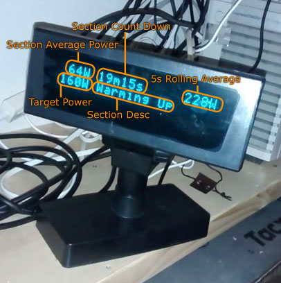

Yuyushiki : ANT+ Bicycle Power Viewer for Indoor Cycling

You need
Windows PC. x86 capable machine. In other words, ARM machine doesn't work.
ANT+ USB stick. Search 'ANT+ USB' in eBay. Around $10 including shipping charge.
VFD customer display. 2 x 20 characters, ESC/POS command mode is required. Search "VFD customer display" in Aliexpress. Around $60 including shipping charge.
ANT+ power meter. No BLE support so far.
A bike and a turbo trainer, of course :-)
Download
Get latest 'Setup_Yuyushiki_ver_?_?_?.zip' from GitHub.
How to start
Configure your customer display. It should be in ESC/POS command mode. The supplier will give you the configuration software.
Install Yuyushiki.
Plug your customer display and ANT+ USB stick to your Windows PC.
Start Yuyushiki.
Connect Yuyushiki to your customer display. 'Test' button should show 'Connected to Yuyushiki' on your customer display if OK.
Connect Yuyushiki to your power meter. Spin your crank and wake up it. Click 'Search PM' button, and you'll find it.
Make your plan. Look at initial text on the screen and modify it.
Click play button.
Do you have a problem?
Yuyushiki is open source software and no support. Get the source code from the GitHub repository and fix it.